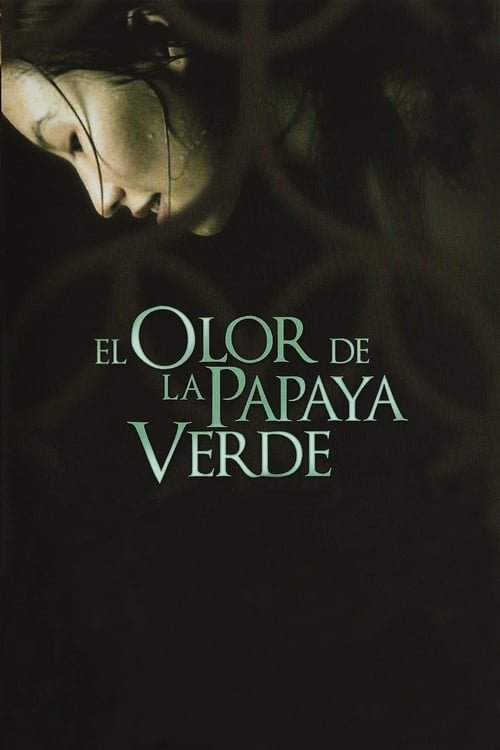

El olor de la papaya verde (1993)
Sinopsis Rápida
En la Indochina francesa de los años 50, la vida de una joven se despliega a través de los olores, sabores y silencios de una casa colonial, revelando una historia de secretos familiares y un despertar a la adultez.
Sinopsis Detallada
El Olor de la Papaya Verde nos sumerge en la vida contemplativa de Muoi, una joven sirvienta en una casa colonial vietnamita. A través de sus ojos, presenciamos la rutina diaria de la familia y las complejidades de su vida, marcadas por un delicado equilibrio entre tradición y modernidad. La película se caracteriza por su ritmo pausado y su exquisita fotografía, pintando un retrato fascinante de la cultura y las transformaciones sociales de la época. La belleza estética se entrelaza con una profunda exploración de la identidad y el paso del tiempo.
¿Por qué tenés que verla?
- Una experiencia cinematográfica única, lenta y contemplativa, que te envolverá en su atmósfera.
- La impecable dirección de Tran Anh Hung y su exquisita estética visual, que la convierten en una obra maestra.
- Su impacto en el cine asiático y su influencia en la estética cinematográfica posterior.
- Una exploración sutil pero profunda de temas como la familia, la tradición y la modernidad.
Idea Extra
Análisis de la simbología visual y el uso del color en la película, explorando su significado cultural e impacto en la narración.